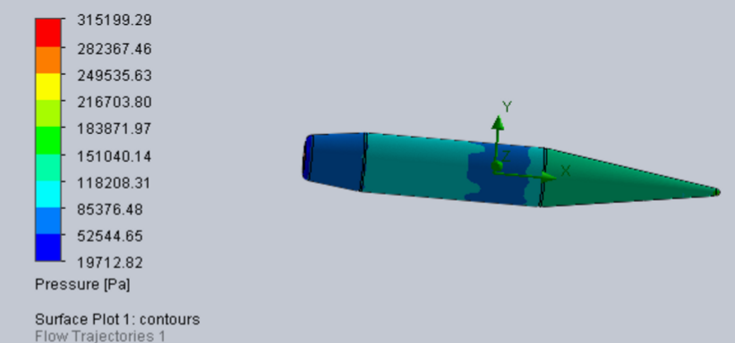
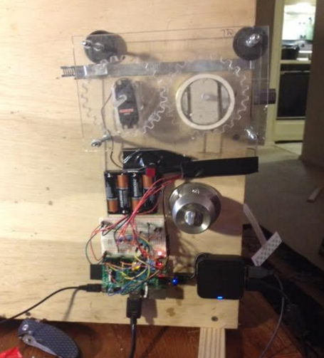
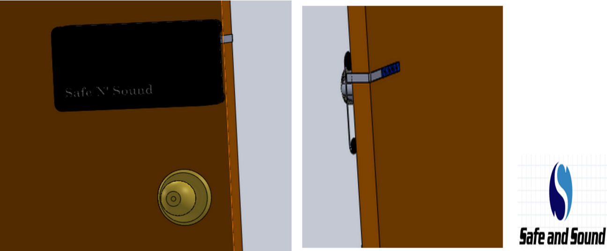

I went to the University of Maryland for undergrad and have thus far continued in grad school. My experiences before returning to college have allowed me to take school more seriously than most college students. Engineering school was so fascinating to me that I took each and every project further than the original project domain. I would like to show a few images of random projects I took on in undergrad that went beyond the norm for most students. These include Wii-Nunchuck controlled RC cars, robotic hands, PCB failure mechanisms, home security systems and ballistic FE simulations.


